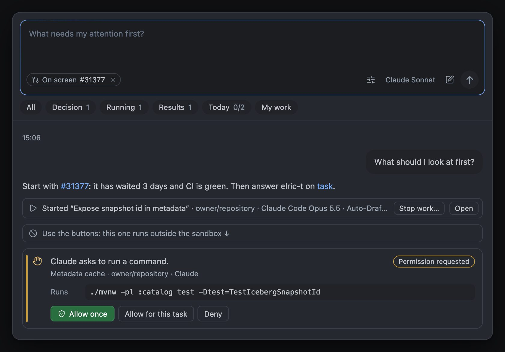
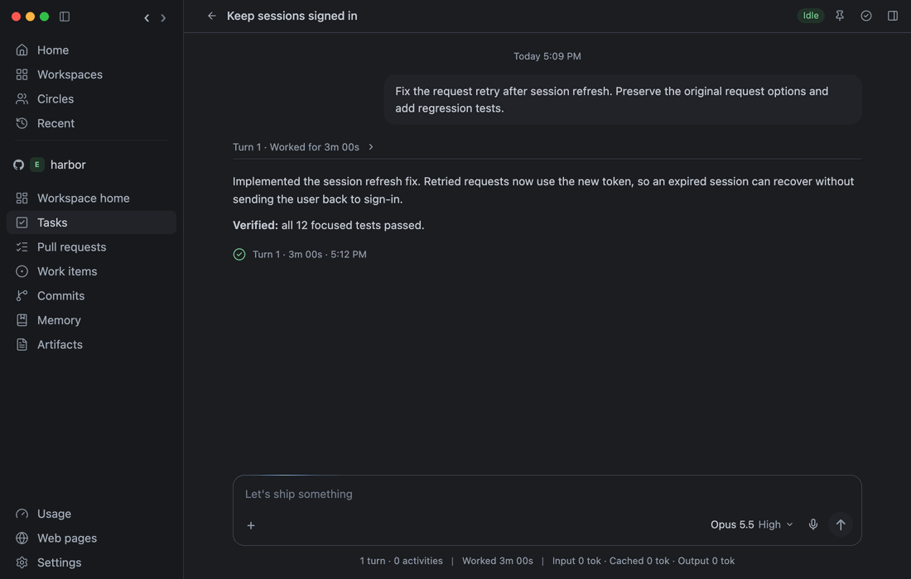

Use the Assistant
Your day and waiting tasks, in one conversation.

Open the Assistant
Bring your day and waiting tasks into one conversation. Turn on Enable Assistant in Settings → Agents → Features; each message uses your model allowance.
- Press ⌘J, or type in the composer under My work on Home, and ask what needs you, or about the item on screen.
- The pills under the composer open one view each: All, Decision, Running, Results, Today, and My work. Click the open pill again to go back to the conversation. Answer approvals and questions right on Decision's cards; a failed turn shows under Results with why. A finished task with a pull request shows where it stands, such as a draft PR or failing checks, and Review opens it. A result you open leaves Results.
- Ask it to find work or open a page, such as a repository's Tasks. A page with a message box, such as a task, opens with the cursor in it. Pull request cards can Approve, Merge, Comment, and, on your own PRs, Close. Each click leaves a receipt.
- Ask it for today's agenda. It reads the one on Home, or makes it when you ask, as Make again does.
- Ask for a new Epic issue. Nothing is created until you click Create issue.
- Start a new topic with New conversation or ⌘N. After 15 minutes away, ⌘J opens on a new one. Go back to an earlier one from the clock button to keep going.
- Keep typing while it answers: messages in the same conversation wait in order. Tasks and result reviews run in the background, so you can keep chatting with the same Assistant. Stop this reply stops only its current reply and its waiting messages; Stop work… on a task asks before stopping that task’s current turn.
The card’s label tells you what happens next:
- Approval required — allow or deny a specific action with the task’s buttons.
- Answer needed — answer a question before the work can continue.
- Proposal — review a suggestion before adopting it or creating anything.
- Result ready — the result is available; open it when useful. A finished turn alone does not prove the whole goal is complete.
- Completed — the work’s completion condition has been verified.
- Needs attention — inspect a blocker, failure, or uncertain outcome.
- Progress — work is continuing; open it for details or stop its current turn.
Reports keep their findings and evidence in the conversation after a notice is cleared. A permission receipt says Allowed, Denied, or Answered; it does not mean the work is completed. Each work card updates in place. Activity keeps earlier reports, evidence, rule receipts, and why the result stayed quiet or needed attention. Ask about this opens a private, read-only discussion of the saved result; it does not restart the task. Choose Rules in the composer to inspect and activate your rules, or type @rules to have the Assistant suggest new ones.
A result that leaves you a step to do by hand, such as running a command, needs your attention instead of staying quiet. When that step is pushing the task’s branch or closing its PR, Let ByteQuay push it or Let ByteQuay close it sends the task those words, and it does the step itself. The same button answers a task that stops to ask whether ByteQuay should push its branch or close its PR.
When an active rule finishes a private PR review, the Assistant reads its saved findings in the background and decides whether you need an interruption. The Result ready card includes a short summary, the rule that started it, and Read full review. Routine results stay visible without a popup, native notification, unread dot, or Dock badge. A serious issue or notification requested by your rule can alert you. While the summary is being prepared, a quiet Progress card keeps the saved review accessible. Approval requests, questions, and failures appear immediately. If the Assistant is disabled or cannot assess the result, the card still links to the full review.
Messages waiting in a chat survive an app restart. A reply that had already started is marked interrupted instead of repeating an action with an uncertain outcome. Independent tasks, result reviews, and private result discussions can run while you keep using the Assistant. For a directly requested development task, the Assistant may make one additional local verification or repair attempt within the original request. It respects Stop, newer input, existing permissions, and delivery checks; unresolved questions and uncertain external actions remain visible.
⇧⌘J opens the task that has waited longest on your decision. The Dock counts items that need attention; only those items can show as macOS notifications. An approval or question waits five minutes for your answer: its card shows the time left, and its alert comes back once in the last minute. With no answer by then, the turn stops and Results shows No answer within 5 minutes. When CI Autofix pauses for your input, its development task shows the question. Reply there with a message that includes @ci. Memory's spec checks and learning runs don't alert: one that asks stops after five minutes, or sooner with Stop.
A running task that goes quiet for 10 minutes, with no command running and nothing waiting on you, or whose command runs far longer than that program usually takes, moves to Decision as Looks stuck, with why. Open it or choose Stop work…; nothing is stopped for you.
⌥Space opens the same Assistant from any app, even over a full-screen window, with voice, cards and replies. What you open from it shows in ByteQuay. Escape puts it away and keeps what you typed. If another app, such as Claude, already uses ⌥Space, quit it or change its shortcut, then restart ByteQuay.
Let it act when you ask
In Settings → Agents → Features, you can let the Assistant start tasks, answer tasks, change Epics and work items, or acknowledge and snooze items. Each of these switches is off by default.
Assistant can change pull requests is on by default. Name the pull request, such as “close #58” or “label #58 as bug”. The Assistant can close or reopen it, mark it ready for review or turn it back into a draft, rerun its failed checks, ask or stop asking reviewers, add or remove labels, approve it, update its branch with its base, and comment or change its title or description in your own words. It approves only the commits you last saw, and a review draft with comments stays yours to send. Updating a branch merges its base in, or rebases it when you say rebase; GitLab can only rebase.
Say merge to merge it, such as “merge #58”. The Assistant merges only an open pull request that is approved with no changes requested, its checks passing, no review thread left open and nothing on the host blocking it, at the commits you last saw. It merges the way the card's Merge does, or squashes, rebases or makes a merge commit when you say so; a branch with a merge queue merges through the queue. When it can't, its receipt says why.
Ask what reviewers said, such as “what did sam-r ask for on #58?”, and it reads the reviews, the inline comments with their replies, and the comments ByteQuay holds for that pull request, newest first. It never waits on the host: when that copy is older than the latest activity, it says when the copy is from and reads the pull request again in the background. Then ask it to act, such as giving your words to the pull request's development task.
To rename the branch of one of your own pull requests, say so with the new name, such as “move #58 to fix-cache-v2”. A pull request can't switch branches, so the Assistant opens a new one from the new branch with the same title, description and draft state, then closes the old one and keeps its branch. Reviews, comments and labels stay on the old one. A pull request a task follows moves through that task instead.
The same switch lets it act on a private review's findings by their labels, such as “post F-1, send F-2 to the task, drop the nit”. Posting sends one review of comments, only while the pull request is still at the commit the review read and your own review draft holds nothing else. A fix request goes to the review's development task, or to your own pull request's task, and waits behind its current turn. Dropping a finding resolves it privately; the review can reopen it. Each action leaves its own receipt, and a refusal that a page can settle opens that page.
Ask it to work on one of your own pull requests and it uses that PR's development task, as the PR's Development button does, and sends your words there. A task started some other way can't be linked to a PR later.
Ask it to backport a pull request into a repository and it starts a @backport task there. The pull request doesn't have to be merged: the backport waits for the merge, then opens its PR.
To start a task yourself, type @fix, @review or @contribute, choose the repository, then the issue or pull request, as in a repository's task composer. The repository on screen comes first. The task starts at once with that repository's agent; the Assistant's model doesn't read the message, so it needs none of the switches above.
Every action leaves a receipt with Open. Stop work… asks, then cancels the current turn it identifies. The Assistant delegates file edits and commands to the task’s agent.
A task it starts or sends your words to reports back into the same conversation: each unresolved approval or question, with its buttons, then its result or why it stopped. The Assistant can review results in the background; these reviews use your model allowance. Reply to the task under its latest report sends your words straight to that task.
Dictate instead of typing
Speak into any agent composer, the Assistant, a review, or a discussion. Your Mac turns the speech into text, and when you stop talking, ByteQuay sends it after a short countdown. Dictation needs macOS 26 or later.

- Turn on Enable dictation in Settings → Agents → Features. If this Mac still needs something, such as a speech model or microphone access, the Voice card says so and offers the fix.
- In a composer, hold right ⌥ while you speak, then let go. Or click the microphone to start and again to stop. Esc cancels.
- Your words show above the draft as you talk. The finished text lands at the cursor, and ⌘Z removes it.
- When you stop talking, a countdown shows above the draft. After 3 seconds, ByteQuay presses Send for you. With right ⌥, the countdown starts once you let go.
Talk again and the countdown starts over. Esc, typing, a click in the composer or on the microphone, or switching to another app stops it, and your words stay in the draft. To send only when you press Send, turn off Send when I stop talking on the Voice card. Its Countdown can be 1 to 10 seconds.
To speak one language and write in another, choose I speak and Write it in on the Voice card. The first time, Apple asks in a small window to download that translation. Hover the finished words to see what you said.
Your voice stays on your Mac
- Apple's speech engine on your Mac turns your voice into text. No audio goes to a cloud service.
- Agents and model providers see only the text you send, as if you had typed it. They never receive audio.
- A recording exists only while you talk and is deleted once its text is in your draft. If it can't be turned into text, choose Retry or Discard; either way it is deleted when ByteQuay quits.
- Translation runs on your Mac too. The only downloads are Apple's speech and translation models, which come to your Mac.